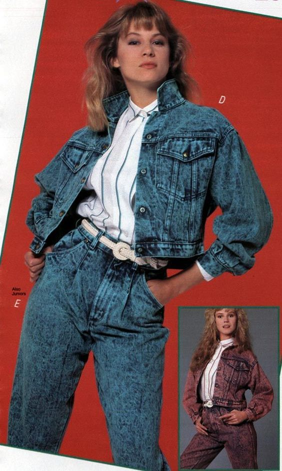
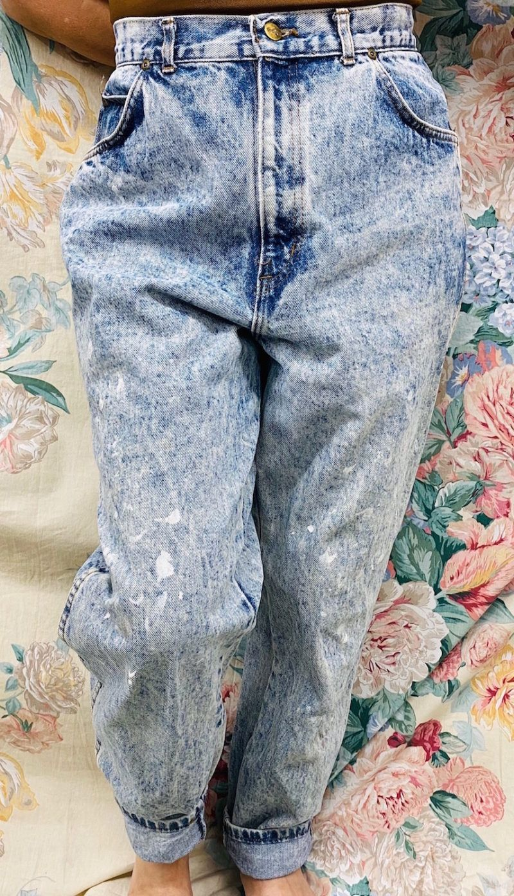

 Source 2.Paperbag jeans were very trendy in the 80s. The fit of the jeans is quite wide around legs, however the waist is made smaller with the help of a (usually small) belt. Source 3.Acid jeans were also really popular. They got their name because it looks like the jeans were soaked in acid with the color differences that you see on the denimBron foto 2Bron foto 3